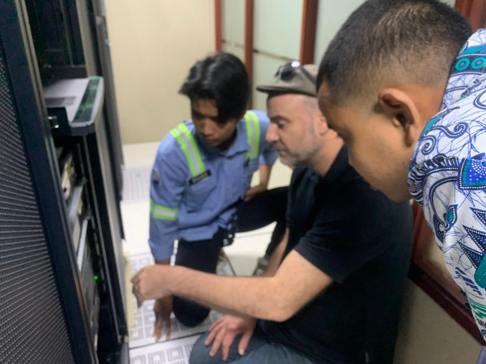
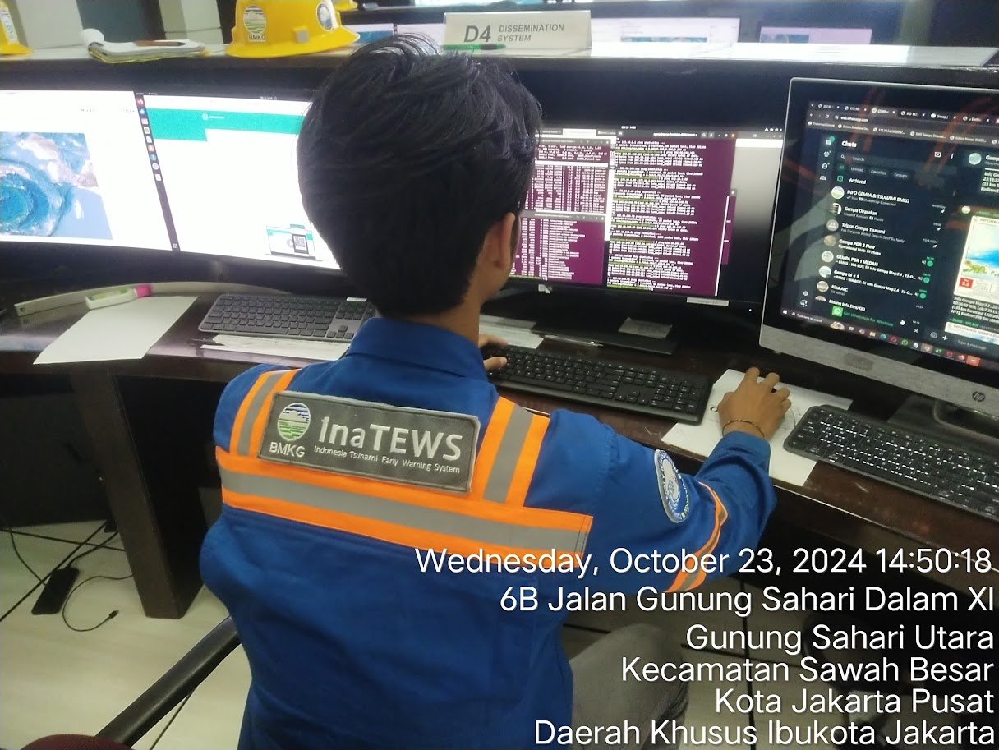
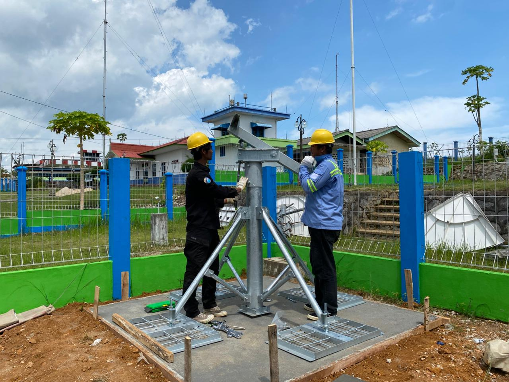

Berikut adalah dokumentasi kegiatan saya selama bekerja sebagai System Administrator di PT Anomali Lintas Cakrawala dan IT Engineer di PT Tri Eltree Element.

Instalasi dan Konfigurasi Server Linux — Menangani 34+ server dan workstation berbasis Linux.

Monitoring Infrastruktur menggunakan Nagios — Berhasil menurunkan downtime hingga 40% dan mencapai 99% data availability.

Dokumentasi Teknis — Membuat topologi jaringan, konfigurasi server, dan prosedur recovery untuk 34 stasiun kerja.